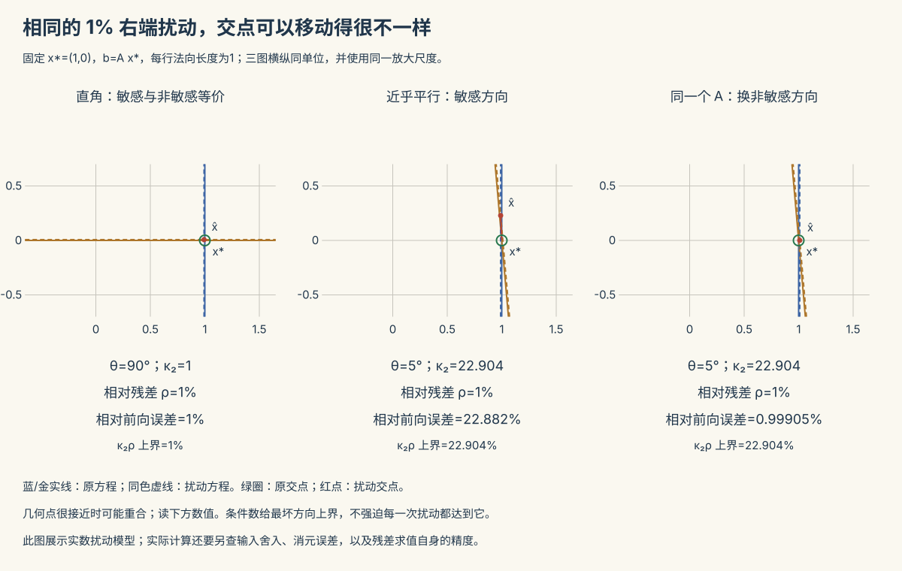

数值 II · 线性方程组的数值解法
\(Ax = b\) 是科学计算的头号内核（离散化 PDE、最小二乘、回归、图算法……最后都落到它）。高代 II 说"Cramer 法则给出解"——数值分析的第一句话是：永远别用 Cramer 算（\(O(n \cdot n!)\)）。本页两条路线：直接法（有限步精确，中小稠密）与迭代法（逐步逼近，大型稀疏），外加病态矩阵的诊断学。
1. 直接法：Gauss 消元 = LU 分解
高代 II 的消元法，矩阵语言重述：消元过程 = 左乘一串单位下三角阵，得
解 \(Ax = b\) 变两次三角回代：\(Ly = b\)（前代）、\(Ux = y\)（回代）。计算量：分解 \(\sim \frac{n^3}{3}\) 乘加，回代 \(\sim n^2\)——同一 \(A\) 多个右端 \(b\) 时只分解一次（这是"分解"视角优于"消元"视角的实用理由；求 \(A^{-1}\) 再乘 \(b\) 则是既慢又损精度的双输操作，工程铁律：永远解方程组，不求逆）。
选主元为什么不可省：主元过小时消元乘数巨大，舍入误差被放大（数值 I 的相消灾难在矩阵里的形态）。列主元（每列选绝对值最大者换到主元位）以 \(O(n^2)\) 的比较代价换回稳定性——工业标准配置（LAPACK 的 getrf）。
对称正定的特权（Cholesky）：\(A = LL^\top\)——计算量减半（\(\frac{n^3}{6}\)）、无需选主元也稳定、分解成功本身就是正定性的数值判据（高代 VI 判据的算法化）。协方差矩阵、正规方程、二次型优化里到处是它。
2. 病态方程组：条件数的主战场

矩阵条件数 \(\kappa(A) = \|A\|\,\|A^{-1}\|\)（谱范数下 \(= \sigma_{\max}/\sigma_{\min}\)，奇异值之比）。误差放大定理：
——输入的相对扰动被放大至多 \(\kappa\) 倍。经验读法：\(\kappa \approx 10^k\) 意味着解损失约 \(k\) 位有效数字（双精度 16 位打底，\(\kappa > 10^{12}\) 基本没法信）。
两条诊断要点：残差小 ≠ 解准（\(\|b - A\hat x\|\) 小只说明后向误差小，病态时前向误差仍可巨大——高代里没有的区分，数值分析的招牌观念）；名例 Hilbert 矩阵 \(h_{ij} = \frac{1}{i+j-1}\)（多项式最小二乘的正规方程），\(n = 10\) 时 \(\kappa \sim 10^{13}\)——这就是"多项式拟合别用正规方程、要用正交多项式或 QR"的原因（统计 V 共线性问题的极端标本；🔗 优化 II 条件数决定收敛速度——同一个 \(\kappa\)，直接法里吃精度，迭代法里吃速度，两头堵）。
3. 迭代法：大型稀疏的主场
分裂法框架：\(A = M - N\)（\(M\) 好解），迭代
定理（收敛充要条件） 迭代矩阵 \(G = M^{-1}N\) 的谱半径 \(\rho(G) < 1\)（高代 V 的谱半径决定矩阵幂的命运——误差 \(e^{(k)} = G^k e^{(0)}\)，一行看穿）。\(\rho\) 越小收敛越快；充分条件常用：\(A\) 严格对角占优 ⇒ Jacobi 与 Gauss–Seidel 皆收敛。
| 方法 | \(M\) | 特点 |
|---|---|---|
| Jacobi | \(D\)（对角） | 全用旧值，天然并行 |
| Gauss–Seidel | \(D - L\)（下三角） | 边算边用新值，通常快一倍，串行 |
| SOR | GS + 松弛因子 \(\omega\) | 调好 \(\omega\) 可数量级加速（知其名） |
共轭梯度（CG，对称正定专属之王）：把 \(Ax = b\) 变成 \(\min \frac12 x^\top A x - b^\top x\)（优化 II 的老朋友），沿一组"A-共轭"方向逐维精确搜索——理论 \(n\) 步精确，实用当迭代法用：每步只要一次矩阵乘向量（稀疏矩阵 \(O(\text{nnz})\)），收敛速率由 \(\sqrt{\kappa}\) 控制。预条件（找 \(M \approx A\) 变换问题压 \(\kappa\)）是它的标配外挂——"压条件数"这个主题第三次出现（数值 I 改写、优化 II Newton、此处预条件），已是贯穿线。
选型速查：中小稠密 → 列主元 LU；对称正定 → Cholesky；大型稀疏对称正定 → CG（+预条件）；大型稀疏一般 → GMRES 一族（知其名）。
4. 典型例题
例 1（选主元的必要性，手算级） \(\begin{pmatrix} 10^{-8} & 1 \\ 1 & 1 \end{pmatrix}x = \begin{pmatrix}1 \\ 2\end{pmatrix}\)：不选主元，乘数 \(10^8\)，消元后舍入把真解信息全部冲掉，解出 \(x_1 \approx 0\)（真解 \(x_1 \approx 1\)）；交换两行后一切正常。一次行交换 = 全部精度。
例 2（Jacobi 收敛判断） \(A = \begin{pmatrix} 4 & 1 \\ 2 & 3 \end{pmatrix}\)：严格对角占优（\(4 > 1,\ 3 > 2\)）⇒ Jacobi/GS 必收敛。迭代矩阵 \(G_J = \begin{pmatrix} 0 & -1/4 \\ -2/3 & 0\end{pmatrix}\)，\(\rho = \sqrt{\frac{1}{6}} \approx 0.41\)——每步误差乘 0.41，约 5 步一位有效数字。
例 3（条件数体检） \(A = \begin{pmatrix} 1 & 1 \\ 1 & 1.0001 \end{pmatrix}\)，\(\kappa \approx 4\times10^4\)：\(b\) 的第 4 位小数变动可致解的第 1 位变动——两根几乎平行的直线求交点，图一画就懂病态的几何：交角越小越病态。\(\blacksquare\)
下一页：非线性方程求根（Newton 法的主场）与"用简单函数逼近复杂函数"——插值与拟合。